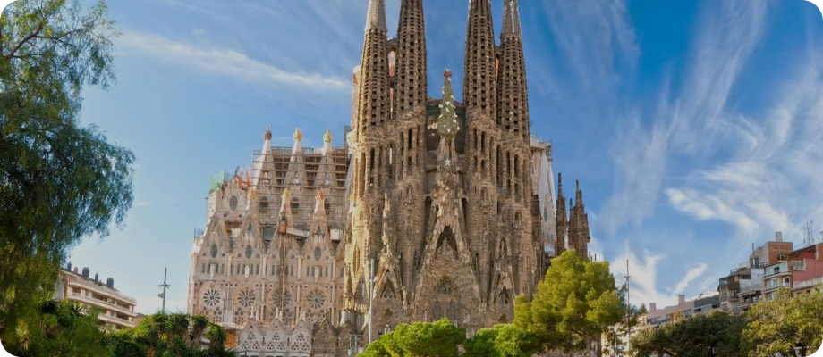
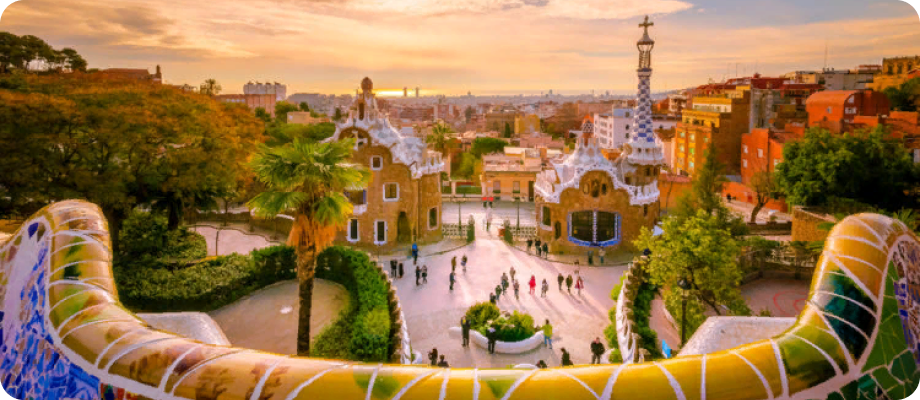
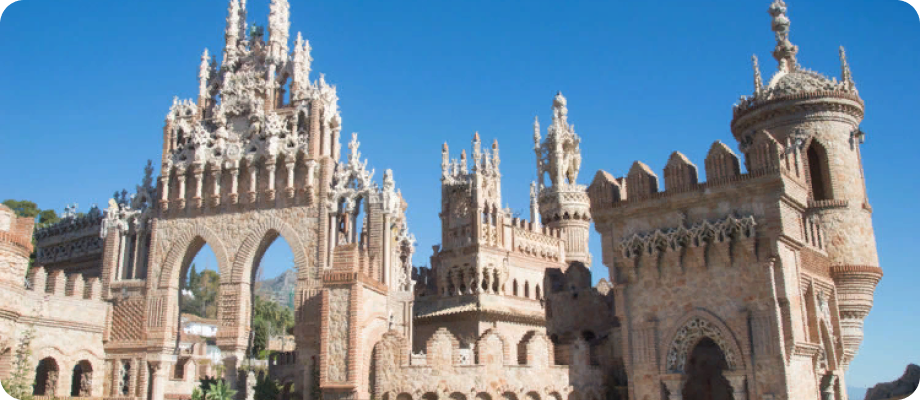
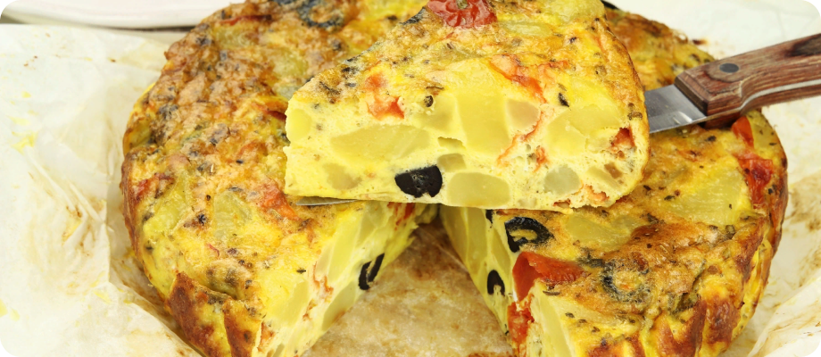
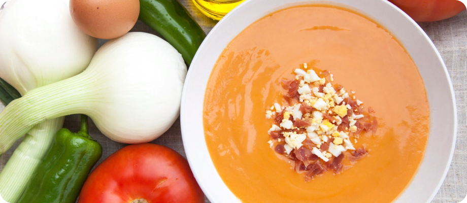

ИСПАНИЯ
Испания
– страна, которая покоряет и удивляет туристов, приезжающих сюда в течение всего года. Страна уверенно лидирует среди тройки наиболее посещаемых государств и ежегодно рада видеть у себя свыше 50 млн. туристов со всего мира.ГЕОГРАФИЯ
Испания
– государство на крайнем юго-западе Европы, занимающее бо́льшую часть Пиренейского полуострова, Балеарские острова в Средиземном море, Канарские острова в Атлантическом океане. Испания — мост между двумя частями света — Европой и Африкой — и барьер, разделяющий Средиземное море и Атлантический океан.ЧТО ПОСМОТРЕТЬ?
Храм Святого Семейства (Барселона)
– Место этой достопримечательности Испании включено в списки объектов ЮНЕСКО. Храм Святого Семейства или Саграда Фамилия, как его еще называют, порождает у туристов различные чувства. Первые ассоциации вызывают в памяти старинную церковную постройку, но необычность сооружения наводит на мысль о ее создании инопланетным разумом.

Парк Гуэля (Барселона)
–Великий архитектор Антонио Гауди приложил свою руку к созданию еще одной достопримечательности Испании, знаменитой на весь мир. Парк Гуэля – это не просто скопление зеленых насаждений. На этом участке гармонично сочетаются сады и жилые зоны – аналог модной в начале XX в. концепции «город-сад».

Замок Коломарес (Бенальмадена)
– Некоторые достопримечательности Испании носят налет футуризма. К таким объектам относится Замок Коломарес, расположенный в небольшом курортном городке. Его называют легендой, высеченной в камне и ярко повествующей об открытии Америки. Построенный в 1994 году в честь 500-летия события, он впечатляет туристов смешением стилей, создавая сходство с кружевным плетением.

КУХНЯ ИСПАНИИ
Картофельная тортилья
– считается, что первое упоминание об испанской тортилье датируется еще 1817 годом. По легенде, бедная жительница Наварры приготовила испанскому генералу картофельный омлет из всех продуктов, что смогла найти в доме. Ассортимент был небогат — картофель, лук да несколько яиц, но генералу блюдо пришлось по вкусу, и вскоре простой рецепт стал очень популярен.

Гаспачо
– в летние месяцы на юге Испании нет лучшего спасения от жары, чем хорошо охлажденный томатный суп гаспачо. Помимо помидоров, в него добавляют огурцы, лук, оливковое масло и чеснок, а подают, как правило, с тостами и красным перцем.

НАСЕЛЕНИЕ ИСПАНИИ
Знаете ли вы, что население Испании превышает 47 миллионов человек? Известно ли вам, что ожидаемая продолжительность жизни превышает 83 года и является одной из самых высоких в мире? Как вы думаете, сколько официальных языков в Испании? Хотя испанский является официальным языком во всей стране, каталанский, галисийский, баскский и валенсийский также являются официальными языками в соответствующих автономных сообществах.
Собирайте друзей, чемоданы и в дорогу. Испания ждёт вас!